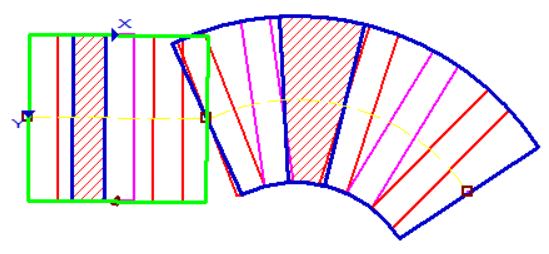

Biểu diễn Caliper đường gấp khúc biến dạng (Variable Trendline Caliper), điều khiển đồ họa Gui tương ứng là scGuiTrendlineEx, ví dụ như vùng kiểm tra của công cụ kiểm tra độ rộng biên dạng cong, vùng tìm kiếm của công cụ tìm hình dạng con nhộng (stadium). Như hình bên dưới, đường gấp khúc biến dạng này có hai hình chữ nhật biến dạng, tức là có hai phân đoạn.

| Phân loại | Tên Interface | Mô tả Interface |
|---|---|---|
| Constructor | scTrendlineExCaliper | scTrendlineExCaliper() Hàm khởi tạo mặc định. |
| Hàm | GetSubRectNum | Lấy số lượng hình chữ nhật biến dạng trong đường gấp khúc biến dạng (số lượng phân đoạn). |
| GetSubRectEx | Lấy hình chữ nhật biến dạng theo chỉ số chỉ định. | |
| SetSubRectEx | Thiết lập hình chữ nhật biến dạng theo chỉ số chỉ định. | |
| GetAllRectExCaliperNum | Lấy tổng số lượng Caliper của tất cả các phân đoạn. | |
| GetSingleRectExCaliperNum | Lấy số lượng Caliper của phân đoạn chỉ định. | |
| GetCalipers | Lấy tất cả các Caliper. | |
| GetIndexCaliper | Lấy Caliper thứ caliperID của phân đoạn thứ rectExID. | |
| BoundingBox | Lấy hình chữ nhật bao quanh nhỏ nhất (Bounding Box) của Caliper đường gấp khúc biến dạng. |
Tính năng: Khởi tạo đối tượng scTrendlineExCaliper.
Tham số: Không.
Giá trị trả về: Không.
Tính năng: Lấy số lượng hình chữ nhật biến dạng trong đường gấp khúc biến dạng.
Tham số: Không.
Giá trị trả về: Số lượng hình chữ nhật biến dạng trong đường gấp khúc biến dạng, kiểu nguyên.
Tính năng: Lấy vùng hình chữ nhật biến dạng theo chỉ số chỉ định trong đường gấp khúc biến dạng.
Tham số:
Giá trị trả về: Hình chữ nhật biến dạng thứ rectExID, kiểu scRectEx.
Tính năng: Thiết lập hình chữ nhật biến dạng cho phân đoạn thứ rectExID.
Tham số:
rectExID: Chỉ số hình chữ nhật biến dạng, kiểu nguyên.
rectEx: Hình chữ nhật biến dạng, kiểu scRectEx.
Giá trị trả về: Số lượng Caliper của hình chữ nhật biến dạng thứ rectExID, kiểu nguyên.
Tính năng: Lấy tổng số lượng Caliper của tất cả các phân đoạn.
Tham số: Không.
Giá trị trả về: Tổng số lượng Caliper của tất cả các phân đoạn, kiểu nguyên.
Tính năng: Lấy số lượng Caliper của phân đoạn thứ rectExID.
Tham số:
Giá trị trả về: Số lượng Caliper của hình chữ nhật biến dạng thứ rectExID, kiểu nguyên.
Tính năng: Lấy tất cả các Caliper.
Tham số: Không.
Giá trị trả về: Vector bao gồm tất cả các Caliper, vector kiểu scRectEx, tương đương với list trong Python.
Tính năng: Lấy Caliper thứ caliperID trong phân đoạn thứ rectExID.
Tham số:
rectExID: Chỉ số hình chữ nhật biến dạng, kiểu nguyên.
caliperID: Chỉ số Caliper, kiểu nguyên.
Giá trị trả về: Caliper thứ caliperID trong phân đoạn thứ rectExID, kiểu scRectEx.
Tính năng: Lấy hình chữ nhật bao quanh nhỏ nhất (Bounding Box) của đường gấp khúc biến dạng.
Tham số: Không.
Giá trị trả về: Hình chữ nhật bao quanh nhỏ nhất, kiểu scRect.
Không
Không